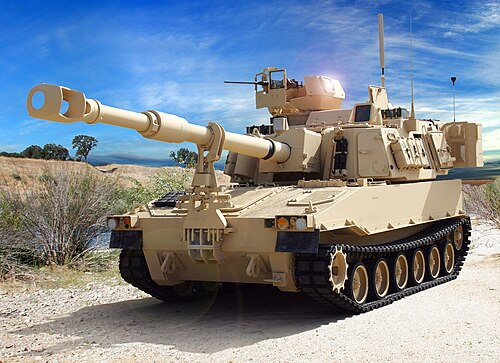

M109 Paladin
Призначення: сучасна самохідна артилерійська установка (гаубиця) дивізійної ланки. Країна: США. Роки виробництва: 1962-до сьогодні. Експлуатація: 1963-до сьогодні. Кількість: ~10 000+ шт. (всіх модифікацій у світі). Озброєння: 155-мм гаубиця M126 (на ранніх) або M284 (на пізніх версіях), 1 × 12,7-мм кулемет Browning M2HB. Броня: зварна алюмінієва катана броня (захист від куль та осколків снарядів). Маневреність: 56 км/год, дизельний двигун Detroit Diesel. Екіпаж: 4-6 осіб (залежно від модифікації та використання машини заряду). Суть у бою: ведення вогню із закритих позицій на великі відстані високоточними керованими снарядами типу Excalibur, а також звичайними осколково-фугасними та касетними боєприпасами. Є основним артилерійським щитом армії США. Відомі битви: Війна у В'єтнамі, Війна в Перській затоці, Війна в Іраку, Російсько-українська війна. Цікава особливість: сучасна модифікація M109A6/A7 повністю інтегрована в цифрову систему управління вогнем, що дозволяє екіпажу відкрити точний вогонь вже через 30 секунд після повної зупинки машини, а потім швидко покинути позицію до початку ворожого контрбатарейного вогню. Модифікації: M109: базова модель 1960-х років. M109A2/A3: модернізація з подовженим стволом гармати та більшим боєкомплектом. M109A6 Paladin: глибока модернізація 1990-х років із сучасною системою навігації, зв'язку та покращеним захистом. M109A7: новітня версія на базі шасі БМП M2 Bradley, що уніфікує запчастини та покращує мобільність.
